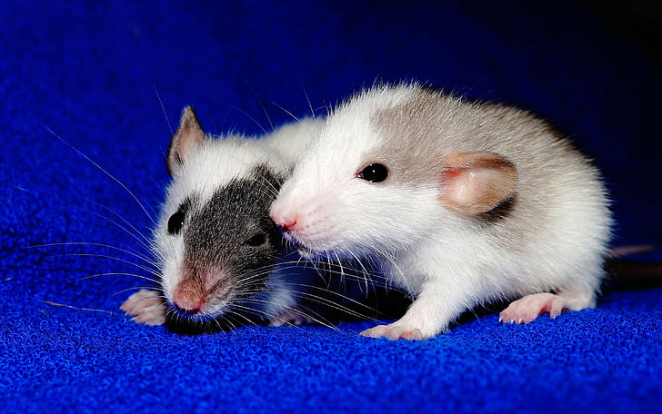

Rato Dumbo
O rato comum tem as orelhas no topo da cabeça, enquanto o rato Dumbo as apresenta mais embaixo, nas laterais de sua estrutura cefálica. Como o próprio nome indica, suas orelhas são muito maiores, inclusive sua cabeça inteira parece ser maior. Sua pele pode variar em cor, bem como sua simpatia, que é determinada pelo nível de interação com seus humanos.

Além dos tipos mais conhecidos de ratos domésticos, a National Fancy Rat Society reconhece pelo menos 21 novas variedades. Todas elas representam um excelente animal de companhia que está ganhando cada vez mais popularidade.
Como você pôde perceber, além de uma boa companhia, os ratos são cheios de surpresas e cuidados que você deve levar em consideração. Existem muitas raças, e todas devem receber atenção, embora algumas mais do que outras. Cuidar bem da sua alimentação, do seu conforto e lhe proporcionar um bom enriquecimento ambiental certamente fará com que o seu rato seja um ser muito feliz.